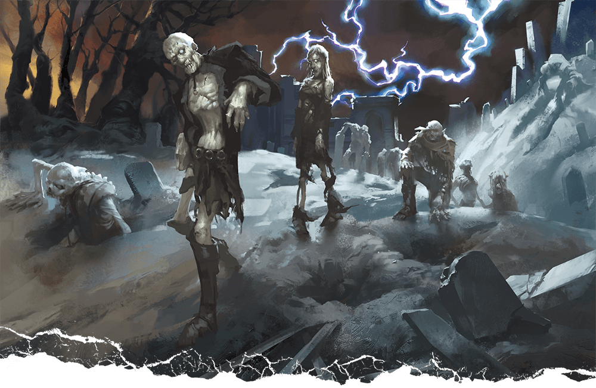
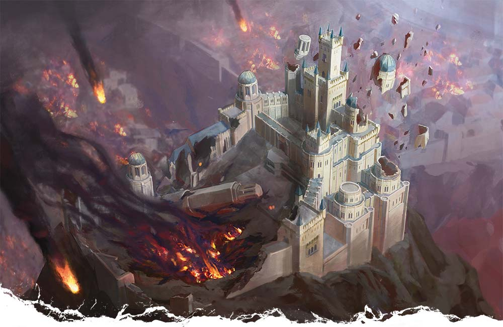
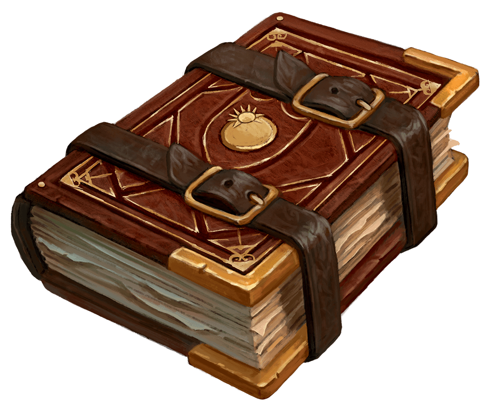
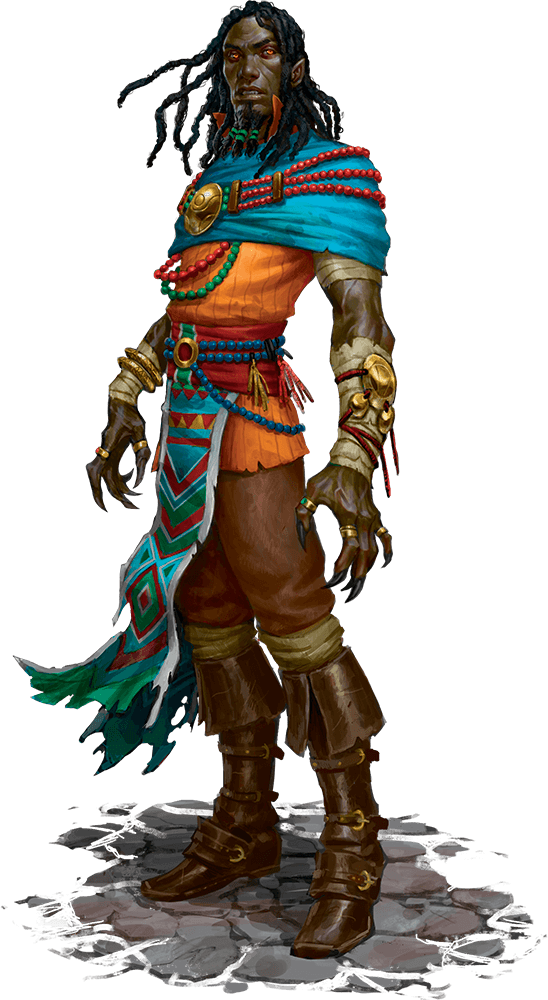
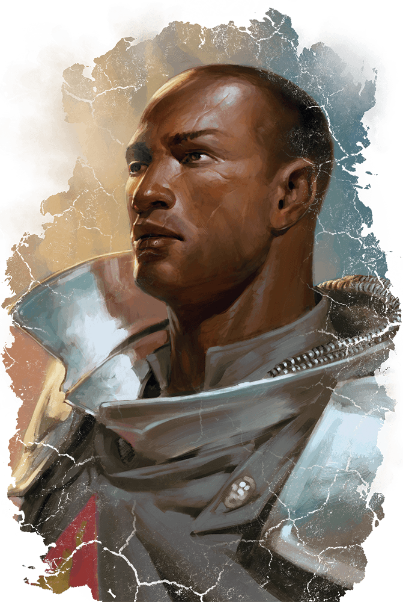
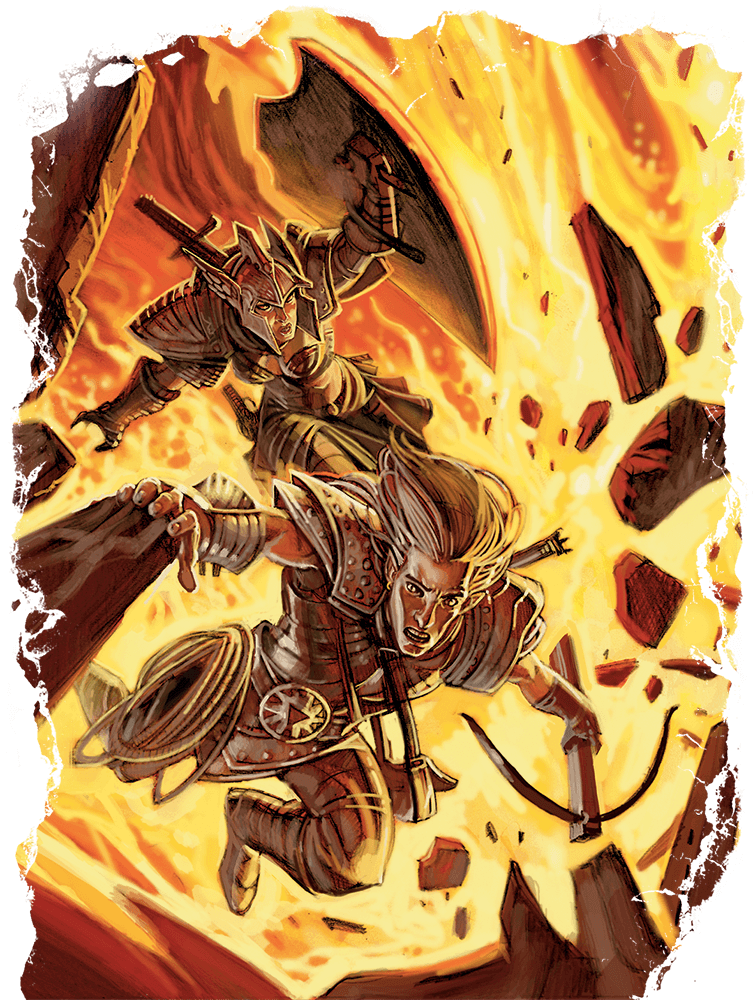
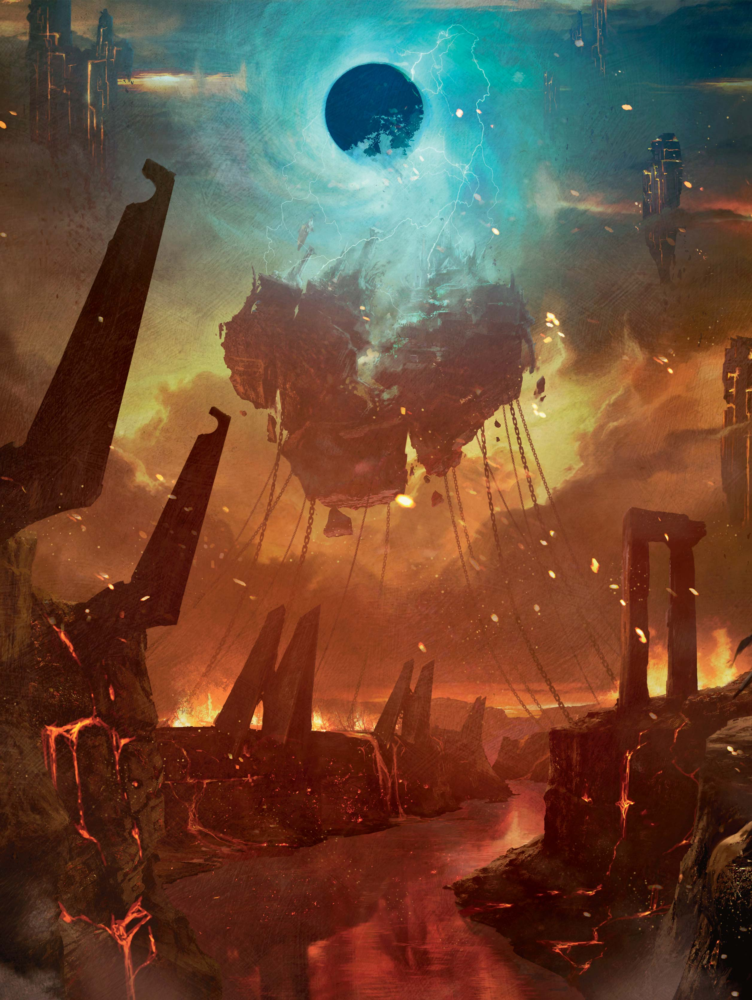

지도 2.1: 엘투렐(Map 2.1: Elturel)


한때 라탠더(Lathander), 토름(Torm), 헬름(Helm), 티르(Tyr)를 숭배하는 신자들의 성스러운 도시였던 엘투렐(Elturel)은, 이제 스틱스 강(River Styx) 위 약 500피트 높이에 묶인 파멸과 절망의 장소가 되었다. 여덟 개의 거대한 쇠사슬이 도시를 지옥 철로 된 들쭉날쭉한 기둥에 묶고 있으며, 그 기둥들은 거인의 못처럼 땅 위로 솟아 있다. (지옥 쇠사슬에 대한 자세한 설명은 이 장 끝부분의 "아래로 내려가기"를 참조하라.) 기둥의 밑동은 수십 마리의 마귀(devil)가 지키고 있어, 도시에서 쇠사슬을 타고 내려가 탈출하는 것은 고된 일이다. 수년간 도시에 위안과 보호를 제공했던 제2의 태양, 동반자(the Companion)는 이제 불길한 눈동자처럼 엘투렐을 내려다보고 있다 — 번개가 지직거리는 검은 공허가 되어.
도시가 마귀에게 완전히 유린되지 않은 것은 한 가지 상황 덕분이다: 마귀의 지상 진지를 공격하는 악마(demon)의 대공세. 이 악마 군단을 막아내느라, 마귀들은 엘투렐의 남은 시민들을 정복할 병력을 보낼 자원이 생길 때까지 기다릴 수밖에 없다. 그럼에도 불구하고, 무작위 악마, 마귀, 기타 피조물들이 도시에 침투했다. 캐릭터들에게는 엘투렐의 상황을 파악하고 도시를 구할 방법을 실행할 시간이 있다.
캐릭터들이 주변을 파악하는 동안에도, 도시 아래 저 멀리에서 시끄러운 전투 소리가 들려온다. 스틱스 강의 탁한 물에서 악마가 끊임없이 기어 나와, 그들을 밀어내려는 아베르누스(Avernus)의 정규군과 맞서고 있다. 이 전투는 캐릭터들이 엘투렐에 머무는 동안 내내 계속된다.
도표 2.1은 이 장의 주요 사건을 순서대로 보여주는 흐름도이다.
모험자들은 엘투렐에 도착할 때 5레벨이어야 한다. 그들은 즉각적인 위험이 가장 큰 도시 동쪽에서 시작한다. 레야 맨틀몬(Reya Mantlemorn)의 안내 여부와 관계없이, 캐릭터들은 높은 전당(High Hall) 대성당을 향해 나아간다. 대성당과 지하묘지에서 마족(fiend)을 처치하면 모험자들은 6레벨이 된다.
높은 전당 대성당 아래 지하묘지에 숨어 있는 NPC 생존자들은 캐릭터들에게 발더스 게이트의 대공작 울더 레이븐가드(Grand Duke Ulder Ravengard)를 찾아달라고 간청한다. 레이븐가드는 엘투렐의 뜻밖의 구원자로 부상한 인물이다. 이 퀘스트는 캐릭터들을 엘투렐 대묘지(Grand Cemetery)의 예배당으로 이끈다. 그곳에서 울더 레이븐가드는 악마 군주 바포메트(Baphomet)와 텔레파시 접촉 후 정신적 혼수 상태에 빠져 있다. 레이븐가드를 안전하게 높은 전당으로 데려와 그의 병을 치료하면, 캐릭터들은 7레벨이 되어 엘투렐을 떠나 도시를 쇠사슬에서 해방하고 남은 것이라도 페어룬(Faerûn)으로 돌려보낼 방법을 찾아 나설 준비가 된다.
차원이동(plane shift) 주문이 마법사 트락시고르(Traxigor)와 최대 8명의 다른 피조물을 엘투렐로 이동시킨다. 여기에는 홀리판트 룰루와 아직 일행에 남아 있다면 레야 맨틀몬도 포함된다. 일행이 엘투렐에 도착하면 다음 상자글을 플레이어들에게 소리 내어 읽어준다:
뜨겁고 따끔거리는 공기가 감각을 공격한다. 당신들이 서 있는 도시의 거리는 무너지거나 이미 붕괴된 건물들로 늘어서 있다. 발밑의 땅이 흔들린다. 붉고 연기 자욱한 하늘에는 직경 400피트의 어둠 구체가 불규칙한 간격으로 도시에 떨어지는 청백색 번개를 쏟아내고 있다. 먼 절벽 꼭대기에, 도시의 나머지를 내려다보며, 무너진 요새가 자리 잡고 있다.
트락시고르는 검은 구체를 초조하게 올려다보더니, 비전 주문의 음절 몇 개를 읊조리고는 눈 깜짝할 사이에 사라진다.
트락시고르는 시간 정지(time stop)를 시전하여 비행(fly) 주문으로 도주할 시간을 벌었다. 시간 정지가 끝나고 캐릭터들이 반응할 수 있을 때는 이미 오래전에 사라진 뒤다. DC 19 지능(비전학) 판정에 성공한 캐릭터는 트락시고르가 어떻게 도주했는지 추론할 수 있다. 당신이 나중에 모험에서 그를 다시 등장시키고 싶지 않다면, 일행은 트락시고르를 다시 만나지 못한다. 트락시고르는 엘투렐을 구하거나 피의 전쟁(Blood War)에서 편을 드는 데 관심이 없다. 긴 휴식을 마친 후, 그는 차원이동을 다시 시전하여 물질계에 있는 자기 탑으로 돌아갈 수 있다.
캐릭터들과 남은 NPC 동행자들에게는 도시에서 첫 번째 위협에 맞서기 전에 새로운 환경에 적응할 수 있는 몇 분의 시간이 있다(아래 "반갑지 않은 무리" 참조). 지진과 기타 위험에 대한 자세한 내용은 "엘투렐의 위험요소" 사이드바를 참조하라.
아베르누스(Avernus)로 돌아온 룰루는 마음대로 사용 가능한 타고난 주문시전 능력인 빛(light)을 되찾는다. 기억과 관련해서는, 처음에는 끔찍하기는 하지만 주변이 낯익게 느껴진다는 정도만 인식할 수 있다. 아베르누스의 소리와 냄새가 자리엘의 타락과, 하위 차원계(Lower Planes) 거주자로서의 그 천사의 초기 시절에 대한 기억을 촉발한다. 아베르누스에서 보낸 시간과 특정 NPC들과의 핵심적인 상호작용이 서서히 룰루의 기억을 되살려, 캐릭터들이 도시를 구할 길을 찾는 데 도움이 된다.
레야 맨틀몬은 주변에서 보이는 것 — 폐허가 된 엘투렐 — 에 낙담하지만, 자신의 도시를 파괴로부터 구하겠다는 결의를 더욱 굳힌다. 그녀는 캐릭터들을 높은 전당 대성당으로 안내하겠다고 제안하며, 그곳에서 지휘관을 찾을 수 있기를 바란다.
캐릭터들이 숨겨진 군주의 방패(Shield of the Hidden Lord)를 가져왔다면, 구덩이 마귀 가르가우스(Gargauth)가 감옥에서 탈출하려 하지만 처참하게 실패한다. 캐릭터들은 가르가우스의 탈출 시도를 알지 못하지만, 구덩이 마귀는 엘투렐을 탐색하는 동안 점점 더 낙담하고 초조해진다. 가르가우스는 캐릭터들에게 도시에서 지체하지 말라고 재촉하며, 그러지 않으면 도시와 함께 스틱스 강으로 끌려 내려갈 거라고 경고한다. 비밀리에, 구덩이 마귀는 캐릭터들이 엘투렐을 떠나 아베르누스를 탐험하면 다른 탈출 수단이 나타나기를 바라고 있다.
캐릭터들이 엘투렐에서 처음 맞이하는 조우는 끔찍한 것이다. 도시의 무고한 주민 다수가 거리를 순찰하는 마귀를 피해 숨어 있었지만, 식량과 물 부족으로 인해 한 집단이 은신처를 포기할 수밖에 없었다. 마귀에게 발각된 이 시민들은 공격당하기 직전이며, 캐릭터들이 그들의 유일한 희망이다.
캐릭터들이 엘투렐에 도착할 때 장면을 설정하기 위해 다음 상자글을 읽어준다:
아직 서 있는 건물 모퉁이를 돌아 한 여성이 달려 나온다. 양팔에 어린 아이를 하나씩 안고 있다. 그녀의 뒤를 세 마리의 지옥 괴물이 글레이브를 들고 뱀처럼 꿈틀거리는 수염을 휘날리며 느릿느릿 쫓아온다. 마족들이 어둡게 낄낄거리고 있다.
블라스(Blass), 노드(Nodd), 턴(Thunn)이라는 이름의 수염 마귀(bearded devil) 셋이 도시에 침투하여 혼란을 일으키려 하고 있다. 하르키나 헌트(Harkina Hunt)와 그녀의 어린 쌍둥이 아들 에조(Ezo)와 브라스크(Brask)는 식량을 구하러 나왔다가 세 마귀에게 발각되었다. 추격전은 캐릭터들이 도착한 위치에서 30피트 떨어진 이 거리까지 이어졌다.
캐릭터들이 개입하지 않으면, 수염 마귀들은 몇 라운드 안에 무고한 인간들에게 도달하여 빠르게 포획한다. 포획되면 세 사람 모두 방랑 시장(Wandering Emporium)에서 노예로 팔릴 것이며("방랑 시장" 참조), 마귀가 권력을 키우는 데 도움이 되는 호의나 물품과 교환될 것이다.
캐릭터들이 이 장면을 목격하는 순간, 모든 참가자가 주도권 굴림을 한다. 자기 차례에, 룰루와 레야는 세 인간이 마귀에게 공격당하려는 것을 보고 캐릭터들의 행동과 관계없이 즉시 방어에 나선다. 룰루는 가족을 다치게 하거나 다른 마족을 끌어들일까 봐 나팔 사용을 주저하지만, 최후의 수단으로는 사용한다.
마귀에 의해 HP가 0이 된 헌트 가족 구성원은 살해되지 않고 의식을 잃는다. 마귀들이 그들을 포로로 잡으려 하기 때문이다. 하지만 캐릭터들이나 NPC 동행자에게는 그런 배려를 하지 않는다.
캐릭터들이 헌트 가족을 구하면, 하르키나는 한없는 감사를 표한다. 평민(commoner)이지만 그녀는 숙련된 장궁(longbow)을 지니고 있으며, 이를 사용해 가족을 보호한다. 장궁 외에도 화살 40개가 든 화살통을 가지고 있으며, 그 중 20개는 은화살(silvered arrow)이다.
하르키나는 도시의 현 상황에 대해 다음과 같은 정보를 전달할 수 있다:
캐릭터들이 수염 마귀 또는 엘투렐에서 만나는 다른 마귀를 포획하여 심문하면, 캐릭터들이 석방에 동의한다는 전제하에 DC 15 매력(위협) 판정에 성공하면 다음 정보를 밝힌다:
헌트 가족과 수염 마귀와의 첫 조우 이후, 캐릭터들은 대공작 레이븐가드를 찾기 위해 가능한 한 빨리 높은 전당으로 가고 싶어 할 것이다. 아직 하지 않았다면, 플레이어들이 도시의 구조와 높은 전당에 도달하기 위해 어디로 가야 하는지 감을 잡을 수 있도록 포스터 지도의 엘투렐 면을 펼쳐라. 지도 2.1은 이 포스터 지도 면의 축소판이다.
일행이 이름이 있는 한 장소에서 다른 장소로 이동할 때마다 d20을 굴린다. 11 이상이 나오면 도시 내 이동 중 조우가 발생한다. 예를 들어, 캐릭터들이 다리를 향해 이동할 때 조우 판정을 한다. 그다음 다리를 건너고 높은 전당으로 이동할 때 다시 판정을 한다. 캐릭터들이 거리를 방황하거나 다른 생존자를 찾아 나서면 역시 판정을 해라.
조우가 발생하면, 엘투렐의 조우 표에서 굴리거나 마음에 드는 조우를 선택한다. 각 조우는 한 번만 발생할 수 있다. 이미 발생한 조우가 나오면 표를 다시 굴리거나 다른 조우를 선택한다. 이 조우들은 표 뒤에 이어지는 절에서 설명한다.
| d10 | 조우 |
|---|---|
| 1 | 건물 붕괴 |
| 2 | 도움을 구하는 외침 |
| 3 | 소름 끼치는 식사 |
| 4 | 구울 무리 |
| 5 | 적의를 품은 순찰대 |
| 6 | 임프의 영업 |
| 7 | 나르주곤 기병 |
| 8 | 지옥불 분출 |
| 9 | 브록의 철학 |
| 10 | 좀비 떼 |
지진이 도시를 뒤흔들고, 멀리서 건물이 무너진다. 캐릭터들은 잔해 속에서 도움을 구하는 외침을 듣는다.
갇힌 피해자들이 질식하거나 압사하는 것을 막으려면, 캐릭터들은 세 번 실패하기 전에 총 여섯 번의 능력 판정에 성공해야 한다. 이 판정의 기본 DC는 10이다. 가능한 판정에는 잔해를 치우기 위한 근력(체육) 판정, 좁은 곳에 몸을 끼워 넣기 위한 민첩(곡예) 판정, 가장 좋은 발굴 지점이나 구조물을 지지할 위치를 파악하기 위한 지능(조사) 판정, 추가 붕괴 위험이 있는 위험 구역을 알아차리기 위한 지혜(감지) 판정 등이 있다. 마법이나 다른 능력을 사용하면 자동 성공으로 처리할 수도 있다.
구출 작업 중 소동이 마귀를 끌어들이거나(아래 "적의를 품은 순찰대" 참조) 기타 반갑지 않은 관심을 끌 수 있다.
캐릭터들이 구출에 성공하면, 무너진 건물 아래에서 질서 선 성향의 방패 드워프 셋을 꺼낸다: 스트로빈 아이언피스트(Strovin Ironfist), 카트라 볼더스턴(Kartra Boulderstern), 벨코라 애쉔웰(Velkora Ashenwell). 스트로빈과 카트라는 노동자(평민 능력치 블록 사용)이지만, 벨코라는 석공이자 드워프의 신 모라딘(Moradin)의 시종(acolyte)이다. 그녀의 치유 능력은 높은 전당에서 환영받는 자원이 될 것이다. 세 드워프 모두 공용어와 드워프어를 구사하며, 60피트의 암시야를 가진다. 또한 독 피해에 대한 저항력과 독에 걸리는 것에 대한 내성 굴림 이점을 가진다.
캐릭터들은 도움을 외치는 목소리를 듣는다. 목소리를 따라가면, 마귀들을 뚫고 지옥 결속 기둥을 기어올라 엘투렐에 침투한 두 마리의 불레자우(bulezau)에게 공격당하는 남성 인간을 발견한다.
캐릭터들이 그 남자를 구하면, 그는 자신을 엘투렐에서 대장간을 운영했던 오린 래그론(Orin Ragron)이라고 소개한다. 하지만 오린은 실제로 팔트락스(Faltrax)라는 인큐버스(incubus)가 변장한 것이다. 인큐버스는 엘투렐의 방어 정보를 수집하려 하며, 이를 가장 높은 값을 부르는 마족 입찰자에게 팔 계획이다. 캐릭터들이 팔트락스의 정체를 발견하면, 인큐버스는 도주한다.
캐릭터들은 네 명의 망토를 두른 인물이 골목에서 빠져나와, 눈에 띄지 않으려는 듯 주거지로 들어가는 모습을 목격한다. 캐릭터들이 그 주거지에 들어가면, 네 마리의 가스트(ghast)가 탁자 주위에 서서 아베르누스로 이동하는 동안 여기서 숨진 인간 가족의 유해를 먹고 있는 모습을 본다. 가스트들은 죽음과 부패의 악취를 풍긴다.
가스트를 처리한 후, DC 10 지혜(감지) 판정에 성공하면 찬장에서 희미한 울음소리가 들려온다. 안에는 쇼라 헤브런(Shorah Hevrun)이라는 어린 소녀가 있다. 비전투원인 그녀는 자신에게 친절한 첫 번째 캐릭터에게 즉시 달라붙는다. 쇼라는 안전하다고 느낄 때까지 캐릭터들과 동행하겠다고 고집한다. 그녀를 높은 전당까지 데려가면, 각 캐릭터는 영감(inspiration)을 얻으며, 그곳의 생존자들이 쇼라를 돌볼 수 있다.
일곱 마리의 구울(ghoul)이 다음 식사거리를 찾아 엘투렐 거리를 배회하고 있다. 이전에 모험가 도적이었던 우두머리는 AC를 13으로 올려주는 마법 스터디드 가죽 갑옷을 입고 있다(아래 "보물" 참조). 이 도시의 전직 시민들은 엘투렐이 아베르누스로 끌려왔을 때 사망했다. 그들의 영혼은 이 차원의 끔찍한 힘에 의해 부패하여 이 언데드 형태가 되었다.
구울 우두머리는 +1 스터디드 가죽 갑옷을 입고 있으며, 탐험가 배낭을 지니고 있고, 허리 주머니에 투명화 물약(potion of invisibility)이 들어 있다.
메레곤(merregon) 하나가 세 마리의 가시 마귀(spined devil)를 이끌고 거리를 누비며, 필멸자 생존자나 도시 아래의 마귀 세력을 돌파한 악마를 찾고 있다. 가시 마귀들은 지옥어(Infernal)로 불평하며, 아래에서 악마와 싸울 수 있는데 왜 여기 올라와 있어야 하느냐고 투덜거린다. 메레곤은 그들의 불손함을 침묵 속에 받아들인다.
캐릭터들이 골목을 지나갈 때, 임프(imp) 한 마리가 하플링과 대화하는 것을 발견한다. 둘은 서로에게 집중하고 있어, 캐릭터들이 공용어로 진행되는 대화를 엿들을 수 있을 만큼 가까이 접근하기 쉽다. 하플링은 필스터 페블헉(Pilster Pebblehuck)이라는 제빵사(평민)로, 가족과 함께 제빵소 지하실에 숨어 있었다. 식량이 바닥나자 필스터는 위험을 무릅쓰고 거리로 나와 식량을 찾고 있었다. 임프 퍼칠럭스(Perchillux)는 필스터에게 영혼이라는 저렴한 가격에 한 달 치 식량을 제공하겠다고 한다. 캐릭터들이 두 사람을 발견했을 때, 필스터는 계약서에 서명하려는 참이다.
계약서는 하플링 피부로 만든 양피지에 쓰여 있다. 캐릭터 중 누군가 서명을 중단시키고 계약서를 읽겠다고 하면, 임프는 자기 일에 참견하지 말라고 한다. 하지만 필스터는 계약에 대해 다시 생각하고 있었기 때문에 중단을 환영하며, 계약서를 캐릭터들에게 건넨다. DC 15 지능(조사) 판정에 성공하면 밀도 높고 복잡한 계약서 내용을 파악할 수 있다 — 필스터가 서명하면 임프가 필스터의 가족 전체의 영혼을 가져가게 된다.
캐릭터들이 임프를 공격하면, 임프는 투명해져서 가능한 한 빨리 도주하려 한다. 캐릭터들이 필스터의 영혼 판매를 막으면, 그는 감사하며 자신과 가족을 안전한 곳으로 데려가 달라고 간청한다. 그의 아내 메리와일(Merrywile)과 세 아이가 근처에 있다.
계약서 외에도, 임프는 이전의 거래에서 얻은 영혼 주화(soul coin) 하나를 지니고 있으며, 이를 자기 주인에게 바칠 계획이다.
나르주곤(narzugon) 하나가 지옥 마구(infernal tack)를 갖춘 나이트메어(nightmare)에 올라타 엘투렐 거리를 순찰하고 있다. 이 마귀는 아래의 전투를 돌파하여 도시에 접근했을 수 있는 악마를 사냥하고 파괴하라는 명령을 받았다.
룰루가 이 피조물을 보면, 캐릭터들에게 매우 강력하니 맞서서는 안 된다고 말한다.
캐릭터들은 거리 한가운데에 은으로 도금한 장검(silvered longsword)을 손에 쥔 채 까맣게 탄 인간형 시체를 발견한다. 어떤 피조물이든 시체의 5피트 이내로 이동하면, 시체에서 지옥불이 분출한다. 시체의 5피트 이내에 있는 모든 피조물은 DC 12 민첩 내성 굴림을 해야 하며, 실패 시 14 (4d6) 화염 피해를, 성공 시 절반의 피해를 받는다.
시체를 더 조사하면, 타버린 허리 주머니 안에 온전한 약병이 발견된다. 약병에는 거인 힘의 물약(서리)(potion of giant strength (frost))이 들어 있다.
브록(vrock) 한 마리가 전투에서 이탈하여 도시로 날아올라 만물 속 자기 역할에 대해 사색하고 있다. 캐릭터들이 내버려두기만 하면 공격하지 않는다. 접근하면 말을 건네는데, 캐릭터 중 심연어(Abyssal)를 구사하는 이가 없으면 텔레파시로 한 번에 한 캐릭터에게 의사소통한다.
브록은 존재의 변덕스러움과 가능한 의미에 대해 장광설을 늘어놓는다. 캐릭터들이 친절하게 대하고, 그의 사색에 관심을 보이며, DC 13 매력(설득) 판정에 성공하면, 작은 부탁 하나를 들어주게 할 수 있다. 공격하면 브록은 적대감으로 보복한다.
브록에게 받을 수 있는 호의에는 도시 아래에서 무슨 일이 벌어지고 있는지에 대한 정보, 도시 동부와 서부를 잇는 다리를 지키는 세력에 대한 정보, 또는 악마가 차원문을 이용해 도시에 진입하려는 계획(구역 G12 참조)에 대한 정보가 포함될 수 있다. 다만 브록은 그 차원문의 위치를 모른다.
캐릭터들이 건물 옆을 지날 때, 정문에서 두드리는 소리가 들린다. 문은 끼어 있지만 잠기지 않았으며, 열려면 DC 15 근력 판정에 성공해야 한다. 캐릭터들이 문을 열면, 열두 마리의 좀비(zombie)가 건물에서 언데드의 눈사태처럼 쏟아져 나와, 문 앞에 서 있던 이들을 무더기 밑에 파묻는다. 전투 시작 시 해당 캐릭터들과 좀비들 모두 넘어진 상태(prone)가 된다.
캐릭터들이 좀비를 처리하고 건물을 수색하면, 이곳이 학교였음을 알게 된다. 지하실에는 각각 3갤런의 깨끗한 물이 담긴 통 다섯 개가 보관되어 있다.
아베르누스의 쇠사슬에 묶인 엘투렐은, 누군가가 구할 방법을 찾지 못하면 스틱스 강에 침몰할 운명이다.
한때 도시의 협곡을 가로지르던 두 개의 다리가 이제는 그 아래로 떨어져 나간 거대한 균열 위로 엘투렐의 동부와 서부를 잇는 유일한 통로가 되었다. 북쪽 다리는 토름의 손길(Torm's Reach), 남쪽 다리는 토름의 검(Torm's Blade)이라 불린다. 캐릭터들이 비행하거나 순간이동하지 않는 한, 높은 전당으로 가려면 이 다리 중 하나를 이용해야 한다.
캐릭터들이 어느 다리에 접근하든, 균열의 세부 사항과 길을 막는 경비를 확인할 수 있다. 장면을 설정하기 위해 다음을 읽어준다:
땅의 균열이 엘투렐을 두 구역으로 나누고 있다. 도시 아래 저 멀리서 벌어지는 전투의 소란스러운 함성이 이곳에서 더 크게 들리며, 들쭉날쭉한 열린 협곡을 타고 울려 퍼진다.
폭 20피트, 길이 100피트가 넘는 다리가 협곡을 가로지르고 있다. 다리 석조에 새겨진 신성한 룬 문자는 이 구조물이 용기와 자기희생의 신 토름의 이름으로 축성되었음을 나타낸다. 여섯 마리의 지옥 피조물이 다리 한가운데에 서서 사방을 경계하고 있다.
각 다리는 도시 동부와 서부 사이의 지원을 차단하라는 임무를 맡은 지옥 병력이 지키고 있다. 각 집단은 수염 마귀 둘과 가시 마귀 넷으로 구성되어 있다. 은밀함과는 거리가 먼 야수 같은 자들이라, 이 피조물들은 각 다리 한가운데에 자리 잡고 끊임없이 경계하고 있다. 정면으로 맞서면 힘든 전투이지만, 캐릭터들에게는 비장의 수가 있을 수 있다.
비전학, 역사, 또는 종교에 숙련된 캐릭터라면 누구든 각 다리의 석조에 새겨진 룬 문자가 활성화되면 마족과 언데드에 해로운 광휘 에너지를 생성할 수 있음을 알아본다. 다리에 접촉한 채 행동으로 DC 15 지능(종교) 판정에 성공하면 토름에게 올바른 기도를 올려 룬을 1분 동안 활성화할 수 있다. 룬이 활성화된 동안, 다리에 접촉한 상태에서 자기 턴을 시작하는 모든 마족 또는 언데드는 22 (4d10) 광휘 피해를 받는다. 이 효과가 끝나면, 룬은 1시간 동안 다시 활성화할 수 없다.
아베르누스의 세력이 스틱스 강에서 밀려오는 악마의 공격을 막느라 바쁜 가운데, 몇몇 마귀 팀이 엘투렐에 침투하여 살아남은 시민들 사이에 혼란을 뿌리고, 발견되는 필멸자의 영혼을 거두고, 도시의 방어력을 시험하라는 명령을 받았다. 그 선발대 중 일부는 높은 전당이 도시 방어와 생존 노력의 중심지로 보인다는 것을 파악했다. 따라서, 그들은 신속하고 결정적인 타격을 가하기로 결정했다.
캐릭터들이 높은 전당에 접근하면, 요새의 대성당에 대한 마귀의 공격이 진행 중임을 목격한다. 캐릭터들은 전투에 뛰어들어 범인을 처치하고, 상황에 일시적인 안정을 가져올 수 있다. 마귀를 물리친 후, 캐릭터들은 생존자들로부터 대공작 레이븐가드가 높은 전당에 있었지만 최근 떠났다는 소식을 듣는다. 그는 도시의 묘지에서 발견된 고대 유물이 도시를 구하는 데 도움이 될 수 있기를 바라며, 병사들을 이끌고 묘지로 향했다.
높은 전당은 용기와 자기희생의 신 토름에게 바쳐진 웅장한 백색 성이다. 엘투렐의 많은 종교 및 정치 지도자가 이곳에 거주했다 — 적어도 도시가 필멸의 영역에 있었을 때는.
엘투렐이 아베르누스로 끌려온 직후, 운석이 높은 전당을 관통하며, 도시 방어를 가장 잘 조직할 수 있는 이들의 사무실과 거처를 붕괴시켰다. 엘투렐 지도자 대부분이 운석에 의해 사망했지만, 발더스 게이트의 대공작 레이븐가드와 그의 수행원은 이 참사를 면했다. 레이븐가드는 즉시 상황을 장악하고, 엘투렐의 남은 병력을 소집하여 도시를 보호할 계획을 세웠다. 레이븐가드의 군대는 도시 동부를 구하지 못했으며, 더 빈번해지는 악마와 마귀의 침입이 서부 지역의 통제력도 서서히 약화시키고 있다.
이곳의 생존자들 — 도시 지도부의 마지막 사람들을 포함하여 — 은 높은 전당의 대성당 부분에 자리 잡았다. 엘투렐에 남아 있는 건물 중 가장 안전하고 견고한 건축물이다. 그러나 대성당조차 공격을 받고 있으며, 캐릭터들의 도움 없이는 방어자들은 반드시 무너질 것이다.
캐릭터들이 높은 전당에 접근하면, 장면을 묘사하기 위해 다음 상자글을 읽어준다:
이 절벽 위의 성은 한때 엘투렐의 건축 보석이었다. 다섯 개의 감시탑 중 세 개만 아직 서 있으며, 그마저도 버려진 것으로 보인다. 성 부지로 통하는 나무 대문은 산산조각 나서 성벽에 큰 구멍을 남겼다.
성의 서쪽은 부서진 벽돌과 꺾인 목재 더미로 변해 있다. 살아남은 건물들은 그을음으로 까맣게 변해 있다. 성 부지의 중앙에는 높은 전당 대성당이 의연하게 서 있다.
캐릭터들이 성 부지에 들어설 때 위협은 드러나지 않는다. 안으로 들어가면, 부서진 대문 근처에서 판금 갑옷을 입은 인간 둘이 땅에 쓰러져 죽어 있는 것을 발견한다. 물린 상처에서 아직 피가 스며 나오고 있다.
캐릭터들이 안뜰 중앙으로 다가가면, 대성당 문 앞에 지옥 사냥개(hell hound) 두 마리가 보초를 서고 있는 것을 발견한다. 이 마족은 마귀 주인의 명령에 따라 모든 필멸 피조물이 대성당에 들어가거나 나오는 것을 막고 있다.
캐릭터들은 대성당에 접근하려면 지옥 사냥개를 물리쳐야 한다. 잔해 사이에 엄폐물을 찾으며 이동하기 위해 DC 15 집단 민첩(은신) 판정을 하게 하라. 개별 판정에서 절반 이상의 캐릭터가 성공하면 집단 판정이 성공하며, 지옥 사냥개에게 발각되지 않고 대성당 계단 밑까지 도달할 수 있다. 이 경우 전투가 시작될 때 캐릭터들이 기습(surprise)을 얻는다.
네 집단의 마귀와 그 동맹이 대성당을 돌아다니고 있다. 이 집단들은 가능한 한 많은 혼란을 일으키기 위해 흩어져 있으며, 갈 길에 있는 모든 것을 죽이라는 명령을 받았다.
DM으로서, 캐릭터들이 각 집단을 어디서 만나는지 결정할 수 있다. 이 조우들은 개별적으로 진행하도록 설계되었지만, 캐릭터들에게 휴식이나 치유의 기회 없이 두 조우를 연달아 진행하면 강력한 일행에게 좋은 도전이 될 수 있다.
이 조우를 단순하고 직관적으로 유지하고 싶다면, 특별한 효과나 위험요소가 없는 장소에서 진행하면 된다. 조우를 더 흥미롭게 만들고 싶다면, 지진("엘투렐의 위험요소" 사이드바 참조) 중에 전투를 벌이게 하라. 캐릭터들에게 전투를 유리하게 만들고 싶다면, 적 일부를 후퇴하게 하거나 NPC 생존자들이 캐릭터들을 돕게 하라.
현재 대성당에 있는 생존자 대부분은 본 지하묘지(구역 H16)에서 최후의 저항을 준비하고 있으므로, 캐릭터들이 마귀와 동시에 도착하지 않는 한 해당 구역에는 마귀가 없어야 한다.
이 집단은 대성당 습격의 배후인 백색 아비샤이(white abishai) 빅투사(Victuusa)가 이끈다. 빅투사는 최대한의 총애를 얻기 위해 티아마트(Tiamat)와 자리엘 모두를 섬기며, 현재 엘투렐 저항군의 지도자를 찾고 있다. 그 지도자들의 머리를 직접 자리엘에게 바치는 것이 빅투사의 최고의 소원이다. 빅투사는 자리엘에게 헌신한 질서 악 성향의 인간 광신도(cultist) 여섯 명을 이끈다.
드렙(Dreb)이라는 가시 마귀(barbed devil)가 여덟 마리의 거대 게(giant crab)를 이끌고 대성당을 통과하고 있다. 이 게들은 껍데기에서 돌출된 가시와 그들이 풍기는 악랄한 유황 냄새를 제외하면 보통 거대 게처럼 생기고 행동한다. 게들의 집게발이 대성당의 대리석 바닥에 부딪치는 딸깍거림 때문에 이 집단이 누구에게든 몰래 다가가는 것은 불가능하다.
가시 마귀(spined devil) 한 마리가 세 명의 인간 노략꾼(도적 두목(bandit captain) 능력치 블록 사용)을 이끌고 난동을 부리고 있다. 노략꾼들은 아베르누스로의 여행에 의해 미쳐 버렸으며, 이제 자신들의 가시 마귀 주인에게 충성을 맹세했다. 그들의 광기 때문에 대성당을 이동하면서 고함을 지르고 횡설수설한다. 가시 마귀는 텔레파시로 집중하라고 명령하면서 그들에게 으르렁거린다. 이 경계심 없음과 무질서 덕분에 매복하거나 몰래 접근하기 쉬워, 그렇게 할 때 민첩(은신) 판정에 이점을 얻는다.
메레곤 하나가 볼품없는 지옥 사냥개 한 쌍을 감독하고 있다. 마귀는 사냥개를 이용해 숨어 있을 수 있는 생존자를 냄새로 추적한다.
높은 전당 대성당은 세 층으로 구성되어 있다: 대성당 층(구역 H1~H6), 합창단 층(구역 H7~H9), 그리고 지하묘지 층(구역 H10~H17). 이 장소들은 각각 지도 2.2, 지도 2.3, 지도 2.4에 표시되어 있다.
이 설명들의 대부분은 마귀 공격이 아직 일어나지 않은 상태에서 해당 구역에 무엇이 있는지를 소개한다. 위의 "대성당 습격" 절에서 제공된 조우를 기반으로, 마귀 공격 중이거나 이후에 구역이 어떤 상태인지, 어떻게 보이는지를 묘사하도록 본문을 조정할 수 있다.
달리 명시되지 않는 한, 높은 전당(High Hall) 대성당(Cathedral)에는 다음과 같은 공통 특징이 있다.
미술품. 한때 엘투렐 주민들의 강인함과 무용을 묘사한 아름다운 그림, 조각상, 기타 예술 작품으로 장식되어 있던 대성당은 엘투렐이 아베르누스(Avernus)로 끌려왔을 때 마법적으로 변형되었다. 이제 예술품들은 악마들의 우월함과 힘을 증언하며, 필멸자들이 유혹에 굴복하고, 마족의 손에 죽어가고, 영원한 고문을 받는 장면을 보여준다. 바라보면 그 이미지들이 불안하게 뒤틀리고 소용돌이친다. 마법 탐지(detect magic) 주문을 사용하면 대성당의 프레스코화, 모자이크, 회화, 태피스트리가 환영 마법의 아우라를 발산하고 있음을 알 수 있다. 이 효과는 엘투렐이 아베르누스의 쇠사슬에서 해방되면 끝난다.
크기. 대성당의 세 층은 각각 아래층보다 20피트 높은 곳에 위치한다. 대성당 내 방의 천장 높이는 15피트이며, 방과 방을 연결하는 출입구의 높이는 8피트이다.
문. 대성당의 문은 철로 만들어져 있다. 각 문은 대형 물체로 AC 19, 27 HP를 가지며, 독성 및 정신 피해에 면역이다. 대성당의 문이 잠겨 있는 경우, 도둑 도구를 이용한 DC 17 민첩(Dexterity) 판정에 성공하면 잠금을 해제할 수 있고, DC 20 근력(운동) 판정에 성공하면 강제로 열 수 있다.
조명. 대성당 내부는 벽면 촛대에 시전된 지속 화염(continual flame) 주문으로 밝게 비추어져 있다.
벽. 장비 없이 대성당 외벽을 올라가려면 DC 15 근력(운동) 판정에 성공해야 한다.
창문. 대성당의 창문 대부분은 아베르누스로 추락하는 과정에서 깨졌지만, 창문에는 내부에서 걸쇠로 잠기고 철 경첩으로 바깥쪽으로 열리는 방어용 덧문이 설치되어 있다. 외부에서 덧문을 열려면 DC 17 근력(운동) 판정이나 도둑 도구를 이용한 DC 15 민첩(Dexterity) 판정에 성공해야 한다. 각 덧문은 대형 물체로 AC 19, 27 HP를 가지며, 독성 및 정신 피해에 면역이다.


캐릭터들이 이 구역에 들어서면 다음을 읽어준다:
대성당으로 올라가는 계단 꼭대기에 아치형 입구가 열리며, 기둥 여덟 개가 서 있는 긴 전당이 나타난다. 일부 기둥은 토름(Torm)의 모습으로 조각되어 있지만, 아베르누스의 지옥 마법이 나머지 기둥들을 빛나는 검을 든 날개 달린 여성 악마의 형상으로 뒤틀어 놓았다.
마법으로 변형된 기둥에 묘사된 악마는 자리엘(Zariel)이다.
대현관으로 통하는 나무 문은 침입한 악마들이 부수고 들어왔으며("대성당 습격" 참조) 열린 채로 남아 있다. 네 명의 경비병(guard)이 출입구에서 사망한 채로 발견되며, 악마가 이끄는 무리 중 하나에게 내장이 적출된 상태이다.
현관에는 두 개의 원형 계단이 있으며, 각각 성가대석 층의 H7 구역으로 올라간다. 이곳의 장식된 기둥에는 토름을 대표하는 상징과 장면이 묘사되어 있다. 일부가 무기와 발톱에 찢긴 커튼이 이 구역과 대성당의 중심부를 분리하고 있다.
캐릭터들이 이 구역에 들어서면 다음을 읽어준다:
이 넓은 전당의 높은 단 위에 제단이 놓여 있다. 아름답게 광택이 난 티크나무로 만들어진 제단은 건틀릿을 끼고 주먹을 쥔 손 모양이다. 제단 옆에 커다란 레버가 서 있어, 어떤 기계적 기능이 있음을 짐작케 한다.
레버를 당기면 손이 펼쳐져서, 토름에게 바치는 봉헌물이나 의식을 받는 시신을 그 위에 올려놓을 수 있다.
제단 활성화. 도시에 벌어진 모든 일에도 불구하고, 이 제단은 토름에게 봉헌된 상태를 유지하고 있다. 제단에 접촉한 생물이 DC 15 매력(종교) 판정에 성공하면 모든 HP를 회복한다. 이 판정은 각 생물당 한 번만 시도할 수 있다. 제단의 힘은 어떤 생물에게든 작용하지만, 토름에게 헌신하는 자들에게 특별히 조율되어 있다. 토름의 성직자와 성기사는 이 판정에 이점을 받는다.
비밀문. 손이 펼쳐진 상태에서 제단을 조사하여 DC 15 지혜(지각) 판정에 성공한 캐릭터는 손바닥에 있는 큰 비밀 패널을 발견한다. 패널은 쉽게 열리며, 지하 묘소(catacombs) 층 중앙부, H15 구역 서쪽으로 내려가는 숨겨진 계단이 드러난다.
이 구역들은 소규모 비공개 의식을 위해 커튼으로 가릴 수 있다. 각 예배당에는 사망한 경비병들의 시신과 대성당 초기 공격 중 죽은 지옥 생물의 역겨운 잔해가 있다. 각 구역의 북쪽과 남쪽 끝에 있는 기둥 앞에 석재 제단이 놓여 있다.
생존자. 실바누스(Silvanus)에게 헌신하는 드루이드 셀턴 오브랜치(Seltern Obranch)가 공격이 벌어졌을 때 이곳에 있었다. 난전 중에 쓰러진 후, 공격자들을 속이기 위해 죽은 척했다. 캐릭터들이 시신을 수색하면, 셀턴이 눈을 뜨는 것을 알아챈다.
캐릭터들이 친절하게 대하면, 셀턴은 악마 군세가 대성당을 습격한 상황을 이야기한다. 그는 현재 대성당의 상태에 대해서는 아는 바가 없지만, 공격 시 대성당의 모든 사람이 주 납골당(H16 구역)으로 피신하도록 알고 있었다고 전한다.
셀턴은 열매 축복(goodberry) 주문을 사용하여 대성당 안의 사람들을 살려 왔다. 하지만 사랑하는 자연과의 연결이 날마다 약해지고 있어, 곧 주문을 시전할 수 없게 될까 두려워한다. 실제로 이 능력을 잃을 위험에 처한 것은 아니지만(단지 결의가 흔들린 것이다), 이것은 캐릭터들이 그의 사기를 북돋우고 신앙을 강화해 주는 롤플레이 기회를 제공한다.
이 원형 계단은 한때 거주 구역과 사무실로 통했다. 해당 공간이 있던 구역이 파괴되면서 지금은 잔해로 막혀 있다.
캐릭터들이 이 구역에 들어서면 다음을 읽어준다:
이 개인 예배당에는 분명히 마족의 기운이 감도는 모독된 제단이 있다. 한때 토름에게 봉헌되었던 이 제단의 형상은 피와 체액, 힘줄과 내장으로 엮어 만든 찢긴 살점 조각으로 훼손되었다.
이 개인 예배당은 H4 구역의 것과 유사하다. 현재 대성당에서 날뛰고 있는 악마들이 토름의 신성한 제단을 훼손했다. 자리엘에게 적극적으로 숭배하거나 충성을 맹세하지 않는 생물이 모독된 제단에서 20피트 이내에서 자기 턴을 시작하면, 뼈가 부서지기 쉬워지고 피부가 건조하고 갈라지는 감각과 함께 모든 피해에 대한 취약성을 얻는다.
제단을 복구하고 모독 효과를 끝내는 방법은 다음과 같다:

H2 구역의 원형 계단이 이 구역으로 올라온다. 캐릭터들이 처음 이곳에 도착하면 다음을 읽어준다:
이 발코니 위에 장엄한 파이프 오르간이 놓여 있다. 상아색 건반은 거의 빛을 발하는 듯하고, 흑단 건반은 모든 빛을 흡수하는 듯하다.
발코니에서 H3 구역을 내려다볼 수 있다. 파이프 오르간 앞에 앉은 캐릭터는 그것이 강력한 마법으로 부여되어 있음을 느낄 수 있으며, 마법 탐지(detect magic) 주문을 사용하면 오르간 주위에 부여 마법의 아우라가 감지된다.
오르간을 연주하여 DC 15 매력(공연) 판정에 성공한 캐릭터는 대성당 전체에 울려 퍼지는 강력한 곡을 연주할 수 있다. 이 곡은 들을 수 있는 다른 모든 플레이어 캐릭터에게 보너스 주사위 d8 하나를 부여한다. 캐릭터는 이 혜택을 한 번만 받을 수 있으며, d8은 향후 24시간 내에 하는 공격 굴림, 능력 판정, 또는 내성 굴림 하나에 더할 수 있다.
매력(공연) 판정이 5 이상 차이로 실패하면, 오르간에서 날카롭고 지옥 같은 선율이 터져 나온다. 이 불협화음에 고무되어, 캐릭터들이 대성당에서 다음으로 맞닥뜨리는 전투 조우에서 각 악마는 첫 번째 턴 동안 공격 굴림에 이점을 받는다.
이 구역의 전면에 두 개의 방어 포탑이 있으며, 안뜰을 내려다본다. 각 포탑 벽면의 화살 구멍은 아래쪽 지면을 볼 수 있게 해주지만, 소형 생물조차 통과할 수 없을 만큼 좁다.
북쪽 포탑에는 트레빅 탄토름(Trevick Thantorme)이라는 정신적 충격을 받은 인간 남성 경비병이 있다. 이곳의 다른 경비병들은 공격이 시작되자 아래층으로 달려갔다가 곧 전사했다. 공포에 질린 트레빅은 이곳에 남아, 지금은 몸을 웅크린 채 모든 것이 괜찮을 거라고 자신에게 속삭이고 있다.
DC 10 매력(설득) 판정에 성공하면 트레빅의 용기를 되살릴 수 있으며, 감정 진정(calm emotions) 주문이나 유사한 효과로도 가능하다. 캐릭터들이 허락하면, 트레빅은 악마 사냥에 동행하겠다고 맹세한다. 그러나 처음으로 피해를 받는 순간 다시 몸을 웅크리며, 전투에 복귀시키려면 행동을 사용하여 다시 판정에 성공해야 한다.
이 발코니로 나가는 문은 안쪽에서 잠겨 있다. 발코니는 바깥 안뜰에서 30피트 위에 있다.
이 구역들은 엘투렐에 헌신한 존경받는 사제, 전사, 기타 봉사자들의 안식처이다. 캐릭터들이 이 구역에 들어설 때마다 d6을 굴린다. 1이 나오면, 캐릭터들은 숨어 있는 1d4명의 겁에 질린 평민(commoner)을 발견하거나(악마들이 아직 찾지 못한 경우), 처참하게 훼손된 시신들을 발견한다(악마들이 찾은 경우).
이 평민들의 운명은 DM이 결정한다. 플레이어들이 대성당 생존자들에 대한 위협의 심각성을 충분히 인식하지 못해 캐릭터들이 꾸물거리고 있다면, 사망한 평민을 발견하게 하여 그 위협을 강조할 수 있다. 더 빨리 행동했더라면 이 죽음을 막을 수 있었을지도 모른다는 것을 플레이어들에게 이해시키는 것은 캐릭터들에게 좀 더 긴박하게 행동하도록 영감을 주는 좋은 방법이다.
이 납골실은 대성당의 다른 곳이나 엘투렐의 묘지에 안장되기를 기다리는 시신을 보관하는 데 사용된다. 현재 이곳에 있는 유일한 시신들은 도시가 아베르누스로 끌려올 때 사망한 사람들이다.
이 대형 신전은 엘투렐에서 가장 강력하고 존경받는 인물들이 참여하는 비공개 의식에 사용되었다. 이곳의 각 반원형 벽감에는 정교한 직립형 석관이 있으며, 토름의 전 대사제 시신이 안치되어 있다. 도둑 도구에 숙련된 캐릭터가 DC 20 민첩 판정에 성공하면 석관을 열 수 있다. 열한 개의 석관에는 부분적으로 부패한 시신이 들어 있다. 열두 번째 석관에는 미라(mummy)가 들어 있으며, 관이 열리는 즉시 공격한다.
각 석관에는 개인 유품이 들어 있지만, 미라가 있는 석관에는 방어 팔보호구(bracers of defense)와 노란 다이아몬드 원소 보석(yellow diamond elemental gem)도 들어 있다. (미라는 전투에서 이 아이템을 사용하지 않는다.)

이 납골당에는 마법이나 무예 대신 지식으로 토름과 엘투렐을 섬긴 이들의 유해가 안치되어 있다: 교사, 기술자, 현자, 기타 공직자들. 열한 개의 벽감에 있는 소박한 석재 선반에 각각 한 구의 유해가 놓여 있다.
대성당에서 일하던 한 도적이 이 방을 훔친 물건을 숨기는 데 사용했다. 한 선반의 유해 뒤에 아홉 개의 붉은 자수정(50 gp 각)과 대형 치유 물약(potion of greater healing)이 숨겨져 있다.
이 방 중앙에 고급 적참나무로 만든 대형 타원형 탁자가 놓여 있으며, 사십 개의 안락한 의자가 둘러싸고 있다. 이 방은 대사제들에게 자문을 제공하도록 선발된 인물들과의 회의에 사용되었다.
캐릭터들이 이 구역에 들어서면 다음을 읽어준다:
이 작고 고립된 묘실은 이 층의 개방된 중앙 구역에서 이어지는 넓은 계단 끝에 열린다. 젊은 여성의 시신이 관대 위에 누워 있으며, 반짝이는 대검이 그녀 곁에 놓여 있다.
동반자(Companion)가 하늘에 나타나기 수 년 전, 젊은 적룡 한 마리가 엘투렐 주민들의 삶을 비참하게 만들었다. 가축을 잡아먹고, 농작물을 불태우고, 공물을 요구했다. 그러던 어느 날, 허름한 차림에 갑옷도 걸치지 않은 한 여인이 대검을 들고 용에게 성큼성큼 다가가 강력한 휘두름으로 짐승을 쳐냈다. 경악한 용이 날아 도망가기도 전에 그녀는 용을 처치했다. 놀라고 압도된 주민들이 여인에게 감사와 보상을 하기 위해 달려갔다. 그러나 가까이 다가가자 그녀는 숨을 거두었다. 이 무명의 여인은 대성당의 이 특별한 장소에 안치되었으며, 시신은 한 번도 부패하지 않았다. 비마법적인 대검이 그녀 곁에 놓였다. 그녀가 토름의 화신이었다거나, 토름의 정수가 그녀를 채워 위협을 물리치도록 영감을 주었다는 소문이 있다.
이 구역의 계단이나 벽감에 들어서는 악마는 강렬한 고통에 시달리며, 이 구역에 머무르는 동안 공격 굴림에 불이익을 받는다.
캐릭터들이 이 구역에 들어서면 다음을 읽어준다:
이 넓은 납골당 구역에는 현재 백 명이 넘는 겁에 질린 사람들이 모여 있다. 그들은 석관 뒤와 벽감 속에 숨어, 눈이 충혈되고 뺨에 눈물 자국을 남긴 채 웅크리고 있다. 커다란 성수대 앞에 초췌한 여인이 서 있다. 회색 머리카락이 땀에 젖어 달라붙어 있다. 한 팔로는 가죽으로 묶인 책을 가슴에 꼭 안고 있고, 다른 손에는 베개보다 단단한 것에 부딪히면 아마 산산조각 날 의례용 철퇴를 들고 있다.
이 납골당에는 지난 세기에 걸쳐 안장된 토름의 수많은 숭배자와 봉사자들의 유해가 안치되어 있다. 현재 높은 전당에 대한 공격에서 살아남은 백 명 이상의 겁에 질린 생존자들이 이곳에 숨어, 자신들의 운명을 기다리고 있다. 그들과 죽음 사이에 선 것은 외로운 시종(acolyte) 페리아 징크스(Pherria Jynks) 한 명뿐이다. 대성당의 모든 사제가 죽고 도와줄 상위 권위자도 없는 상황에서, 그녀는 사람들을 차분하고 조용하게 유지하기 위해 최선을 다하고 있다. 소박한 현자이자 빙의와 퇴마 전문가인 그녀는 이제 막 토름의 봉사자로서 경력을 시작한 참이다.
성수대. 이곳의 두 개의 넓은 성수대에는 사제들이 축복한 물이 담겨 있으며, 성수 50병을 채울 수 있는 양이다.
DC 15 지능(수사) 판정에 성공하면 성수대 중 하나 주변의 석조에서 이상한 세부 사항을 발견하며, 그 아래에 비밀 통로(H17 구역)가 숨겨져 있다.

페리아는 캐릭터들에게 울더 레이븐가드(Ulder Ravengard) 대공작이 그 지역의 언데드 확산을 조사하기 위해 경비병 일단을 이끌고 도시의 대묘지로 갔다고 알려준다. 또한 레이븐가드는 묘지 예배당에 있는 토름의 시야 투구(Helm of Torm's Sight)라는 신성 유물이 엘투렐의 심각한 상황과 가능한 구원에 대한 통찰을 제공해 줄 수 있기를 바랐다.
페리아와 다른 이들은 레이븐가드가 몇 시간 전에 돌아올 것으로 예상했다. 페리아는 이제 대공작에게 끔찍한 운명이 닥친 것이 아닌가 걱정하고 있다. 캐릭터들이 지금까지의 시련으로 지친 상태라면, 페리아는 충분히 휴식한 뒤 가능한 한 빨리 묘지로 가서 레이븐가드와 그의 일행을 찾아볼 것을 제안한다.
이 통로는 H16 구역의 성수대 중 하나 아래에서 접근할 수 있으며, 대성당 지하 묘소(catacombs) 아래에서 높은 전당 바깥으로 이어진다. 통로는 현재 엘투렐이 매달려 있는 떠 있는 암석(earthmote)에 난 벌어진 구멍에서 끝나며, 그곳은 스틱스 강(River Styx) 위 약 500피트 상공이다.

캐릭터들이 이 구역에 접근하면 다음을 읽어준다:
엘투렐(Elturel)의 과거 영웅들을 본뜬 조각 기둥들이 주 예배당(chapel)으로 이어지는 백색 대리석 안뜰을 장식하고 있다. 짙은 마호가니 문은 반쯤 열려 있으며, 안뜰의 창문 잔해에서 산산이 부서진 스테인드글라스가 사방에 흩어져 있다.
DC 10 지능(역사) 판정에 성공하면, 캐릭터는 조각 기둥에 표현된 영웅 한 명의 이름을 기억할 수 있으며, 판정 합계가 10을 초과할 때마다 추가로 한 명씩 이름을 더 기억한다. 영웅들의 이름은 아그니타르(Agnithar), 토름의 조켈(Zokel of Torm), 베르트라 조메스(Bertra Zomes), 예비나 드루엔(Yevina Druen), 카사르(Ca'sar), 지빅 루렌(Xivik Looren), 도프 후서(Dopp Hoosser), 피의 렌크(Whrenk the Bloody), 라베일 드뉘(Laveil deNue), 반랜서 이글탈론(VanLancer Eagletalon)이다.
조각 기둥을 조사하기 위한 DC 10 지능(비전학 또는 종교) 판정에 성공하면, 기둥이 나타내는 영웅의 이름을 행동으로 소리 내어 말하면 기둥에 빛나는 에너지를 부여할 수 있다는 것을 알게 된다. 이렇게 활성화된 조각상 5피트 이내로 턴에 처음 이동하거나 그곳에서 턴을 시작하는 언데드 크리처는 5(1d10) 빛나는 피해를 받는다.
각 기둥은 속이 비어 있으며 비실체 언데드 크리처가 하나씩 들어 있다: 총 네 개의 그림자(shadow)와 네 개의 원혼(specter)이다. 캐릭터가 예배당에 들어가려 하면 일곱 개의 언데드가 기둥에서 나와 공격한다. 사제 거처(구역 G5)에 가장 가까운 원혼은 대신 그 구역으로 이동하여 기디언(Gideon)에게 침입자를 경고하려 한다. 경고를 받으면, 기디언은 신속히 구역 G4로 이동하여 예배당 방어를 준비하고, 원혼은 전투에 합류하기 위해 돌아온다.
캐릭터들이 이 구역에 들어오면 다음을 읽어준다:
한때 아름다웠던 예배당의 주 공간은 부서진 가구와 쪼개진 의자로 가득하다. 스테인드글라스 창문은 모두 깨졌지만, 하나는 바닥에 통째로 떨어져 대부분 온전히 남아 있다. 그것은 토름(Torm) 신이 자기 앞에 무릎 꿇은 남자의 머리 위에 황금 투구를 씌우는 장면을 묘사하고 있다.
그림자 속에서 피묻은 대도끼를 움켜쥔 네 구의 미노타우로스 해골(minotaur skeleton)이 나타난다.
바포메트(Baphomet)의 미노타우로스 무리가 예배당을 공격했으나, 기디언(Gideon)과 그의 하인들이 그들을 처치했다. 그 후 기디언은 이들을 네 구의 미노타우로스 해골로 만들었으며, 캐릭터가 이 구역에 들어서는 즉시 공격한다. 미노타우로스 해골들은 캐릭터에게 돌진하여 깨진 창문 밖으로 밀어내려 한다. 깨진 창문을 통해 밀려나는 크리처는 추가로 7(2d6) 베기 피해를 받는다.
스테인드글라스 창문. 바닥에 대부분 온전히 남아 있는 창문은 금이 가고 밟혔지만, 묘사된 장면은 여전히 알아볼 수 있다. DC 10 지능(역사 또는 종교) 판정에 성공하면, 캐릭터는 이 장면이 토름이 란니쉬 포겔(Lannish Fogel) — 엘투렐 과거의 존경받는 영웅이자 토름의 헌신적인 성기사 — 에게 토름의 시야 투구(Helm of Torm's Sight)를 수여하는 장면임을 알아본다. 스테인드글라스에 묘사된 투구는 바로 래번가드(Ravengard) 대공작이 예배당에서 찾으러 온 유물이다.
캐릭터들이 이 구역에 들어오면 다음을 읽어준다:
정교한 가구의 잔해와 스테인드글라스 창문의 파편이 이 구역 전체에 흩어져 있다. 거대한 스테인드글라스 창문의 일부가 온전히 남아 있어 그 주제를 알아볼 수 있다. 이 창문은 한때 라산더(Lathander)가 쓰러진 병사들 사이에 서서 두 손을 높이 든 채 죽은 자들의 영혼이 그의 곁에 일어나는 모습을 묘사했다.
이 예배당 구역은 엘투렐의 존경받는 정치 및 군사 지도자들의 장례식에 사용되었다.
크리처가 손상된 창문 앞에 무릎 꿇고 라산더에게 기도하면, DC 10 카리스마(종교) 판정에 성공하여 기도의 진정성과 힘을 입증할 경우, 빛나는 무기가 기도하는 자 앞에 나타난다. 라산더의 독실한 추종자는 이 판정에 자동으로 성공한다.
나타나는 무기는 +2 무기이다. 이 아이템은 캐릭터가 당시 장비하고 있는 무기의 형태를 취하며, 기도하는 자에게 전투에서 가장 유용한 형태가 된다. 이 방법으로 캐릭터들이 얻을 수 있는 무기는 단 하나뿐이다.

캐릭터들이 이 구역에 들어오면 다음을 읽어준다:
세 개의 커튼 달린 아치가 이 방과 예배당의 다른 구역들을 연결한다. 산산이 부서진 옷장과 화장대, 그리고 여러 개의 깨진 거울은 이곳이 한때 사제들이 일일 예배를 준비하던 장소였음을 시사한다. 아래로 내려가는 나선 계단은 곤충 같은 외모를 가진 두 크리처가 지키고 있다. 각각은 사악한 삼지창으로 무장하고 있다.
계단은 납골당(ossuary) 층의 작업장(구역 G7)으로 내려간다. 두 마리의 메조로스(mezzoloth)가 계단을 지키고 있다. 기디언 라이트워드(Gideon Lightward)도 언데드 하인 중 하나가 캐릭터의 침입을 경고했다면 여기에 있다. 그렇지 않으면, 캐릭터들은 구역 G5에서 기디언을 만나게 된다.
캐릭터들이 악마들과 맞서려는 바로 그때, 아래에서 소란이 터지며 여섯 크리처가 계단을 뛰어올라온다: 악마적 거대 전갈(fiendish giant scorpion) 한 마리를 뒤따르는 다섯 마리의 드레치(dretch). 이에 메조로스(그리고 기디언이 있다면)는 캐릭터들을 완전히 무시하고, 전갈과 악마에게 모든 공격을 집중한다. 기디언이 있고 캐릭터들이 첫 라운드나 두 번째 라운드 이후 그를 공격하지 않으면, 전투 후 그와 협상할 때 판정에 이점을 받는다. 그렇지 않으면 해당 판정에 불이익을 받는다.
협상. 기디언이 있다면, 모든 악마 크리처가 죽은 후 무기를 내린다. 전투 시작 시 여기에 없었다면, 전투 중 또는 악마가 패배한 후 자신의 거처에서 도착한다. 그는 캐릭터들에게 말을 걸어 악마 침입자 처치에 도움을 준 것에 감사를 표한다. 그의 유일한 목표는 엘투렐의 악마 침입을 — 어떤 대가를 치르더라도 — 저지하는 것임을 분명히 한다.
캐릭터들이 래번가드(Ravengard)에 대해 물으면, 기디언은 무장한 인간 집단이 일찍이 납골당 층에 들어갔다고 말한다. 악마가 아니었기에 그들이 지나가도록 허용했지만, 이제 그 구역에서 악마들이 나오고 있으므로 기디언은 분노하며 그 인간들이 악마와 한패라고 추정한다.
DC 12 카리스마(기만 또는 설득) 판정에 성공하면 캐릭터들은 기디언의 신뢰를 얻을 수 있다. 악마를 처치하러 왔을 뿐이라고 설득할 수 있다면, 그는 지하 묘소 진입을 허락하고 — 메조로스 중 하나가 살아남았다면 그 메조로스 한 마리를 동행시켜 주기까지 한다. 기디언은 예배당을 악마 공격으로부터 지키기 위해 캐릭터들과 동행하지 않는다.
이 작은 건물은 기디언 라이트워드가 예배당과 묘지 관리를 감독할 때 사용하던 거처였다. 캐릭터들이 이 구역에 들어오면 다음 박스 텍스트를 소리 내어 읽어준다:
이 소박한 건물에는 침대, 책상, 서랍장, 탁자, 의자가 있다. 가구 대부분이 파괴되었고, 라산더, 토름, 헬름(Helm), 티르(Tyr)의 성스러운 상징을 포함한 장식품과 기타 물품이 방 안에 아무렇게나 흩어져 있다. 커다란 서책 하나가 파괴를 면한 것 같다. 그것은 반쯤 무너진 책상 중앙에 펼쳐진 채 놓여 있다.
캐릭터들이 여기서 기디언을 처음 만나는 경우, 기디언 역할 연기에 대한 정보는 구역 G4를 참조하라.
기디언의 유서(Gideon's Testament). 이 책은 기디언이 엘투렐의 몰락 전 수개월에 걸쳐 쓴 유서이다. 악마의 사악함에 대해 장황하게 서술하며, 독자에게 악마의 침입에 항상 경계할 것을 지시하고, 악마의 위협을 어떤 대가를 치르더라도 물리쳐야 한다고 역설한다. 끝없는 악마의 물결에 꿋꿋이 맞서는 악마(devil)들을 찬양하면서, 헬름, 토름, 티르, 라산더, 그리고 이들의 천사 시종들이 같은 일을 하지 않는다고 비난한다. 기디언은 악마의 위협을 종식시키려는 자리엘(Zariel)의 노력에 대해서만은 찬사를 아끼지 않는다. 10분 동안 이 서책을 정독한 캐릭터는 DC 10 지능(수사) 판정에 성공하면 이것이 광인의 저작물이라는 결론을 내릴 수 있다.
기본적인 이해 수준을 넘어 계속 책을 읽는 캐릭터는 DC 15 지혜 내성 굴림에 성공해야 한다. 실패하면, 캐릭터는 악마(demon)에 대한 특별히 격렬한 증오로 저주받는다. 이렇게 저주받은 크리처는 60피트 이내에 악마를 볼 수 있으면서 해당 턴에 악마를 공격하지 않고 턴을 끝내면 5(1d10) 정신적 피해를 받는다. 이 저주는 저주 해제(remove curse) 주문이나 유사한 마법으로 제거할 수 있다. 각 긴 휴식이 끝날 때 저주받은 크리처는 DC 15 지혜 내성 굴림을 하여, 성공하면 스스로에 대한 효과를 종료할 수 있다.
캐릭터들이 이 구역에 들어오면 다음을 읽어준다:
예배당 주변의 길이 땅속 깊은 구멍에 의해 갈라져 있으며, 악취가 나는 보라색 안개로 가득하다. 구멍을 채운 안개가 깊이나 그 안에 무엇이 있는지에 대한 감각을 완전히 차단한다.
기디언은 이 30피트 깊이의 구덩이에서 언데드 하인을 만든다. 이 구덩이는 하이 홀(High Hall)에 충돌한 운석의 파편이 떨어져 나가며 형성되었다.
강령 안개(Necromantic Mist). 이 안개는 타락한 동반자(Companion)가 방출하는 강령 에너지로 형성되었다. 안개를 조사하기 위한 DC 10 지능(수사) 판정에 성공하면, 안개가 타락한 동반자의 갈라지는 에너지와 동조하여 맥동하고 있음을 알 수 있다.
턴에 처음으로 안개에 들어가거나 안개 안에서 턴을 시작하는 크리처는 5(1d10) 괴저 피해를 받는다. 장비 없이 구덩이 측면을 오르려면 DC 10 근력(운동) 판정에 성공해야 한다.
기디언이 부하들에게 시체를 구덩이에 던지라고 지시할 때마다, 한 시간 후 언데드 크리처가 기어 나온다. 새로 생성된 언데드는 기디언이 명령을 내릴 때까지 묘지 부지를 인내심 있게 배회한다.
캐릭터들이 구덩이를 조사하는 동안 언데드 크리처 한 구가 나타나며, 기디언이 아직 건재한 동안 이 구역을 떠났다가 돌아오면 더 나타날 수 있다. 어떤 종류의 언데드가 생성되는지는 언데드 생성 표를 사용하여 결정한다.
| 언데드 생성(Undead Creation) | |
|---|---|
| d20 | 언데드 |
| 1–4 | 해골(Skeleton) |
| 5–7 | 좀비(Zombie) |
| 8–10 | 그림자(Shadow) |
| 11–12 | 원혼(Specter) |
| 13–15 | 구울(Ghoul) |
| 16–17 | 가스트(Ghast) |
| 18–19 | 와이트(Wight) |
| 20 | 레이스(Wraith) |
구역 G4에서 내려오는 계단은 잠기지 않은 문과 그 너머의 작업장으로 이어진다. 캐릭터들이 이 구역에 들어오면 다음 박스 텍스트를 읽어준다:
이 작업장은 사제와 수도사들이 매장을 위해 시신을 준비하던 곳으로 보인다. 이곳은 완전히 약탈당했으며, 칼, 톱, 배관, 튜브가 바닥에 널려 있다. 산성 용액과 방부 처리액이 산산이 부서진 플라스크와 항아리 사이로 사방에 웅덩이를 이루고 있다.
북쪽의 이중문은 구역 G8, G9, G11로 내려가는 계단으로 연결된다.
발자국. DC 15 지혜(생존) 판정에 성공하면, 바닥에 흩어진 잔해 속에서 여러 악마의 발자국을 발견할 수 있다. 그 발자국 사이에서 장화를 신은 인간 집단 하나의 흔적도 보인다. 이 장화 자국은 방부 처리액을 끌며 구역 G11까지, 그리고 다시 구역 G12 방향으로 이어진다.

지상 묘지의 비용을 감당할 수 없었던 이들이 이 구역과 구역 G9에 정중히 안장되었다. 캐릭터들이 이 구역에 들어오면 다음을 읽어준다:
이 방의 벽에는 장례 선반이 늘어서 있으며, 각각에 먼지 덮인 인간형 유골이 놓여 있다. 라산더, 토름, 헬름, 티르의 유물과 성스러운 상징이 여러 선반에 눈에 띄게 놓여 있다.
성스러운 상징으로 표시된 유골은 예배당에서 일한 존경받는 사제와 수도사의 유해로, 자신들이 봉사했던 빈민들 곁에서 영면하기를 청했던 이들이다.
이 구역의 성스러운 상징들은 한때 신의 축복을 전달했으나, 엘투렐이 아베르누스(Avernus)로 이동하고 구역 G12의 심연 차원문이 존재하면서 그 미약한 마법이 타락했다. 성스러운 상징을 만지거나, 악마 또는 언데드가 아닌 크리처가 이 구역에 1분 이상 머무르면, 모든 성스러운 상징이 괴저의 힘을 발산한다. 구역 내의 각 크리처는 DC 15 건강 내성 굴림을 해야 하며, 실패 시 18(4d8) 괴저 피해를, 성공 시 절반의 피해를 받는다. 이 위험 요소는 구역 G12의 차원문이 활성화되어 있는 한 1시간 후에 다시 발동한다.
이 거대한 방은 여섯 개의 맨 제단 위로 석벽을 따라 장례 선반이 줄지어 있어, 바닥에서 천장까지 먼지 덮인 인간형 유골이 전시되어 있다.
오퍼르크(Ophurkh)라는 이름의 콰짓(quasit)은 구역 G12의 차원문을 통해 들어온 최초의 악마로, 정찰 역할을 맡았다. 바포메트의 충실한 하인인 이 콰짓은 이 구역에 남아 차원문을 통해 도착하는 다른 악마들에게 지시를 내리며 엘투렐 진입을 준비시킨다.
오퍼르크는 투명한 채로 캐릭터들이 이 구역을 지나갈 때 조용히 있는다. 눈에 띄지 않는 데 성공하면, 캐릭터들을 미행하며 공포(Scare) 능력을 사용하여 이 층에서 쫓아내려는 기회를 엿본다. 실패하면, 다시 투명해진 후 기다렸다가 캐릭터들이 구역 G12에 도달할 때 차원문에서 나오는 미노타우로스와 함께 공격한다.
포획된 경우, 이기적인 콰짓은 DC 10 카리스마(위협) 판정에 성공하면 차원문과 악마 주인들의 계획에 대한 정보를 제공하도록 강요할 수 있다("악마 차원문" 참조).
캐릭터들이 이 구역에 들어오면 다음을 읽어준다:
이 구역에는 쿠션과 갈색 참나무 낮은 의자가 놓여 있다. 빈 제단 위의 벽은 색칠된 뼛조각으로 만든 모자이크로 덮여 있으며, 장례식, 영혼의 이동, 천상의 영역을 묘사하는 장면들이 정교하게 배열되어 있다. 모자이크 아래쪽의 글귀에는 다음과 같이 쓰여 있다: "삶을 명상하라. 죽음은 곧 찾아온다."
종교에 숙련된 캐릭터라면 이곳이 죽은 자를 다루는 사제들이 업무의 어두운 본질을 견디기 위해 명상했던 장소임을 알아본다.
이 금고에는 한때 토름의 시야 투구가 보관되어 있었으나, 더 이상은 아니다. 캐릭터들이 이 구역에 들어오면 다음 박스 텍스트를 플레이어들에게 읽어준다:
이 잔해가 흩어진 금고에는 제단 위에 다섯 개의 대리석 조각상이 있다. 네 조각상은 갈라진 천장에서 떨어진 바위에 의해 형체를 심하게 훼손당해 알아볼 수 없다. 다섯 번째는 무릎 꿇은 남자의 정교한 조각상이다.
알아볼 수 있는 조각상은 구역 G2의 스테인드글라스 창문에서 본 것과 같은 란니쉬 포겔을 묘사하고 있다. 창문을 본 캐릭터라면 두 묘사가 같은 남자임을 알아본다. 구역 G2에서 란니쉬 포겔을 알아보지 못한 캐릭터의 경우, DC 10 지능(역사 또는 종교) 판정에 성공하면 조각상을 알아볼 수 있다.
조각상을 살펴보면, 머리 부분이 별도의 투구를 쓰도록 조각된 것이 드러나지만, 그러한 투구는 존재하지 않는다.
발자국. DC 15 지혜(생존) 판정에 성공하면, 이 구역을 지나간 더 많은 악마 발자국과 구역 G12로 이어지는 장화 신은 인간들의 발자국을 발견할 수 있다.

캐릭터들이 이 구역에 들어오면 다음을 읽어준다:
얕은 명상 수조가 이 방을 채우고 있으며, 낮은 철제 난간으로 둘러싸인 넓은 발판에서 떨어져 있다. 벽을 따라 경이로운 프레스코화가 라산더, 토름, 헬름, 티르의 축복을 받는 영혼들을 묘사하고 있다. 한쪽 벽의 프레스코화는 반짝이는 차원문(portal)을 둘러싼 심연의 형상으로 뒤틀려 있다.
수조에는 발더스 게이트(Baldur's Gate)와 엘투렐의 군복을 입은 인간들의 훼손된 시신이 널려 있다. 소용돌이치는 수조의 물은 그림자로 일렁이며, 이곳에서 쓰러진 악마들이 남긴 검은 농혈이 곳곳에 섞여 있다. 등에 방패를 멘 갑옷 입은 남자가 시신들 사이에 웅크린 채 고통으로 몸부림치고 있다. 눈을 감은 채 두 손으로 머리 위의 황금 투구를 미친 듯이 벗겨내려 하고 있다. 그의 입술에서 알아들을 수 없는 말이 쏟아지는데, 어떤 것은 성스럽고 엄숙하게, 다른 것은 잔인한 쉿소리와 함께 울려 퍼진다.
이 방은 토름의 가장 독실한 추종자들이 답과 위안을 찾아 신의 정신에 접촉하던 장소였다. 수조의 물 깊이는 1피트에 불과하다. 수조 안의 온화한 마법 효과로 물이 천천히 시계 방향으로 흐른다. 심연의 힘에 오염되었지만, 물은 그 안에 들어가는 크리처에게 위험하지 않으며 험한 지형도 아니다.
이 구역의 동쪽 벽은 심연(Abyss)의 에너지가 소용돌이치는 장으로, 바포메트가 이 구역의 타락한 토름과의 연결을 이용하여 엘투렐을 경유해 심연을 아베르누스에 연결한 차원문이다.
중형 인간형(인간), 중립
방어도 20 (판금 갑옷, 방패)
히트 포인트 112 (15d8 + 45)
이동속도 25피트
| 근력 | 민첩 | 건강 | 지능 | 지혜 | 카리스마 |
|---|---|---|---|---|---|
| 17 (+3) | 14 (+2) | 16 (+3) | 11 (+0) | 10 (+0) | 17 (+3) |
내성 굴림 건강 +6, 지혜 +3
기술 운동 +6, 위협 +6, 지각 +3
감각 수동 지각 13
언어 공용어
도전 지수 5 (1,800 XP)
다중공격. 울더는 근접 공격을 세 번 하며, 그 중 방패 공격은 한 번만 가능하다.
+1 장검. 근접 무기 공격: 명중 +7, 사거리 5피트, 대상 하나. 적중: 8(1d8 + 4) 베기 피해, 또는 양손으로 사용 시 9(1d10 + 4) 베기 피해.
방패. 근접 무기 공격: 명중 +6, 사거리 5피트, 크리처 하나. 적중: 6(1d6 + 3) 타격 피해, 그리고 울더는 대상을 5피트 밀어낸다. 이후 울더는 대상이 비운 공간으로 이동한다. 대상이 울더의 아군 5피트 이내로 밀려나면, 대상은 해당 아군으로부터 기회 공격을 유발한다.
수호자의 일격(Guardian Strike). 울더로부터 5피트 이내의 적이 울더가 아닌 대상을 공격하면, 울더는 해당 적에게 근접 공격을 할 수 있다.
울더 래번가드는 구역 G11에서 토름의 시야 투구(Helm of Torm's Sight)를 발견하고 착용했다. 이 투구는 토름이 환상을 보낼 수 있는 비마법 아이템이다. 래번가드가 토름과의 연결을 형성하기 시작했을 때, 이 방에서의 소란이 그와 경호원들을 바포메트가 차원문을 통해 보낸 악마 크리처와의 전투로 이끌었다. 래번가드는 정신 공격을 받아 바포메트와의 정신적 연결에 끌려 들어갔다. 이제 투구를 벗길 수 없으며, 그는 악마 군주와의 정신적 전투에 갇혀 있다. 래번가드는 투구가 벗겨질 때까지 기절 상태이다. 투구는 그가 살아있는 동안에는 벗길 수 없다 — 적어도, 아직은.
캐릭터들이 래번가드 내부에서 벌어지는 투쟁을 관찰하는 동안, 눈이 뒤집힌 세 마리의 미노타우로스(minotaur)가 차원문을 통해 나온다. 이들은 캐릭터들에게 돌진하지만, 래번가드 내부에서 느껴지는 악마적 존재감 때문에 그를 피한다.
천상어(Celestial) 또는 심연어(Abyssal)를 이해하는 캐릭터는 래번가드의 입술에서 새어 나오는 단어 중 일부를 알아들을 수 있다. 그는 두 언어를 번갈아 사용하는데, 토름과 바포메트 모두가 그를 통해 말하기 때문이다. DC 15 지능(비전학 또는 종교) 판정에 성공하면, 래번가드의 정신 안에서 벌어지는 정신적 투쟁이 어떤 신성한 상위 존재와 끔찍한 악마적 존재 사이의 것임을 알 수 있다. 차원문의 힘이 이제 투구에, 그리고 래번가드에 연결되어 있다. 같은 판정으로 단순한 주문으로는 이 속박을 깰 수 없으나, 토름의 힘으로 이 구역을 다시 성화하여 래번가드를 해방하고 차원문을 차단할 수 있는 더 복잡한 의식이 가능할 수 있음을 알게 된다.
대성당에서 페리아(Pherria)와 대화한 캐릭터들은 그녀가 퇴마와 빙의를 전문으로 하는 현자였음을 기억한다. 따라서 그녀가 도움을 줄 수 있을 것이다.
쓰러진 경호원들의 시신을 수색하면 젖었지만 사용 가능한 세 개의 주문 두루마리(대량 치유의 말씀(mass healing word), 저주 해제(remove curse), 방언(tongues))를 발견할 수 있다.
토름의 시야 투구 외에도, 래번가드는 화염 주먹단(Flaming Fist)의 문장이 새겨진 피묻은 판금 갑옷을 입고 있다. 같은 문장이 새겨진 방패는 등에 걸려 있다. 대공작의 +1 장검은 옆에 차여 있다.
캐릭터들이 미노타우로스를 처치하면, 래번가드를 들고 하이 홀로 돌아갈 수 있다. 기디언이 파괴되지 않았다면, 캐릭터들이 예배당이나 묘지를 떠날 때 질문할 수 있다. 기디언 역할 연기에 대한 정보는 구역 G4를 참조하라.
래번가드가 심연어로 중얼거리는 것을 들은 기디언은, 래번가드가 일종의 악마이거나 악마의 동맹이 아닌지 납득시킬 필요가 있을 수 있다. 합리적인 설명 — 래번가드가 실제로 위대한 악마 사냥꾼이라거나, 캐릭터들이 처치할 악마를 가두어 놓았다는 등 — 과 함께 DC 15 카리스마(기만 또는 설득) 판정에 성공하면 기디언은 그들을 통과시킨다.
캐릭터들이 울더 래번가드 대공작을 데리고 하이 홀 대성당에 돌아오면, 페리아 징크스(Pherria Jynks)와 상의하여 래번가드를 죽이지 않고 토름의 시야 투구를 벗기는 방법을 찾을 수 있다. 이를 위해서는 캐릭터들이 수행을 도울 수 있는 의식이 필요하다. 의식이 성공하면, 래번가드에 대한 기절 상태가 종료되고, 그는 엘투렐을 페이룬(Faerûn)으로 되돌리는 방법을 암시하는 환상을 기억해 낸다. 이 환상은 룰루(Lulu)의 기억 일부를 촉발한다. 그녀는 앞으로 나아갈 길을 보지만, 캐릭터들이 도시를 떠나 아베르누스의 무시무시한 풍경에 맞서야 한다는 것이 전제이다.
엘투렐을 떠나고자 하는 캐릭터들은 스틱스 강(River Styx)과 도시 아래에서 전쟁 중인 악마와 데빌의 군단을 피할 방법을 찾아야 한다. 그래야만 캐릭터들은 너클본 요새(Fort Knucklebone)로 알려진 전초기지에 도달할 수 있으며, 그곳에서 모험의 다음 단계가 시작된다(제3장에서 설명).
캐릭터들은 하이 홀 대성당의 상대적 안전으로 돌아갈 수 있다. 앞서 대성당을 점령하려던 데빌들을 물리치는 데 도움을 줬다면, 여정은 별 사건 없이 진행되어야 한다. 또는 긴장감을 유지하려면 도시 서쪽 지역에서 무작위 조우를 굴릴 수 있다("엘투렐에서의 추가 조우" 참조). 캐릭터들이 래번가드 대공작을 보호하며 한두 번의 조우를 겪는 것은 기억에 남는 플레이가 될 수 있다.
울더 래번가드를 데리고 하이 홀 대성당에 돌아오면, 캐릭터들은 페리아 징크스와 드루이드 셀턴 오브란치(Seltern Obranch)의 환영을 받으며, 이들이 대공작을 안전한 휴식처로 옮기는 것을 도와준다. 대성당의 사람들을 구하지 못했다면, 캐릭터들은 안전한 휴식처를 찾거나 도움 없이 전진해야 한다. 도시의 나머지 지역에서 안전한 장소를 찾거나, 도움이 될 기술이나 정보를 가진 다른 생존자들을 찾을 수 있다. 룰루도 다음에 어디로 가야 하는지에 대한 통찰을 제공하는 기억을 되찾을 수 있다.
래번가드의 기절 상태 배경을 파악하지 못한 캐릭터들에게는 페리아가 도움을 줄 수 있다. 수도사와 협력하며 캐릭터들(특히 비전학과 종교에 숙련된 자들)은 앞으로 나아갈 방법을 알아낸다. 투구를 통해 토름의 존재감과 얽힌 악마적 정수는 적절한 의식으로 쫓아낼 수 있다.
페리아가 의식에 필요한 것을 설명한다:
페리아는 이 특정 의식을 한 번도 시도해 본 적이 없으며, 캐릭터들이 그녀를 돕거나 — 과정을 방해하려는 악의 세력과 싸울 준비를 해야 한다고 경고한다.
의식 기도를 암송하는 데 30초가 걸린다. 페리아는 기도를 외우고 있지만, 다른 크리처도 DC 10 지능(종교) 판정에 성공하면 적절한 기도를 할 수 있다. 기도가 암송되는 동안, 한 캐릭터가 다음 5라운드 동안 무명 영웅의 검을 토름의 시야 투구 위에 가만히 올려놓아야 한다. 기도가 암송되는 동안, 검을 들고 있는 자는 자신의 턴이 끝날 때마다 DC 11 건강 내성 굴림에 성공해야 하며, 실패 시 10(3d6) 힘 피해를 받는다.
검을 들고 있는 캐릭터가 첫 내성 굴림을 한 직후, 의식의 강력한 마법이 바포메트에 충성하는 악마 영혼들을 끌어들여, 투구에서 두 개의 도깨비불(will-o'-wisp)로 나타나 기도를 암송하는 자와 검을 들고 있는 자를 공격하여 의식을 방해하려 한다.
검을 들고 있는 캐릭터가 마지막 내성 굴림을 하면, 의식이 완료된다. 도깨비불은 추방되고, 래번가드는 정신을 되찾는다.
악의 세력이 물리쳐지면, 울더 래번가드 대공작은 능력을 되찾고 토름의 시야 투구를 쓰는 동안 겪은 영적 여행의 이야기를 전할 수 있다. 토름이 그에게 앞으로의 길을 보여주었으나, 환상은 차원문을 통해 전달된 악마적 정수에 의해 흐려지고 뒤틀렸다. 래번가드는 다음 정보를 공유한다:
래번가드가 환상을 이야기하자, 룰루는 헬라이더(Hellrider) 중 한 명이 자리엘의 검(Sword of Zariel)을 땅에 꽂고 그 주위에 난공불락의 요새를 세우는 것을 도운 기억을 되살린다. 룰루는 해당 기억이 이미 해금되었다면 헬라이더의 이름을 기억한다(룰루의 기억 표 참조). 래번가드와 홀리판트(hollyphant) 모두 자리엘의 검이 엘투렐을 구하는 열쇠라고 확신한다. 토름의 시야 투구를 쓰고 토름의 환상을 경험한 캐릭터도 같은 느낌을 받는다.
래번가드는 환상의 나머지를 기억하지 못하지만, 룰루는 이야기의 마지막 부분에 흥분하여 날갯짓하며, 추카(Chukka)와 클론크(Clonk)라는 이름의 "새 종족"을 만났던 것을 기억해 낸다. 룰루와 래번가드가 제공한 묘사를 바탕으로, 캐릭터들은 추카와 클론크가 켄쿠(kenku)라는 결론을 내릴 수 있다. 룰루는 이 켄쿠가 자신을 너클본 요새(Fort Knucklebone)라는 고철 야적장으로 데려갔으며, 그곳에서 아베르누스의 황폐한 황무지를 빠르게 이동하기 위한 지옥 차량을 건조하고 수리했다고 기억한다. 룰루는 요새를 누가 운영했는지, 그곳에서 어떤 크리처를 만났는지는 기억하지 못한다.
룰루는 재빨리 대성당 꼭대기로 날아가 엘투렐 아래 아베르누스의 황폐한 풍경을 내려다본다. 크게 나팔 소리를 낸 후 돌아와서, 너클본 요새가 보이며 10마일 이내에 있을 것으로 추정된다고 보고한다.
울더 래번가드는 엘투렐에 남아 생존자들을 조직하여 도시를 휩쓸고 있는 데빌, 악마, 언데드와 싸우겠다고 고집한다. 그는 엘투렐을 방어하며 죽을 각오가 되어 있지만, 룰루가 자리엘의 검을 찾는 것을 돕는 것은 캐릭터들의 몫이다.
레야 맨틀모른(Reya Mantlemorn)이 아직 살아 있다면, 엘투렐에 남아 래번가드가 도시를 보호하는 것을 돕기로 결심하며, 눈물을 참으며 캐릭터들에게 작별을 고한다.
창의적인 캐릭터들은 엘투렐에서 아베르누스의 지표면에 도달하기 위한 여러 가지 선택지가 있지만, 그 어떤 것도 위험 없이는 불가능하다.


엘투렐을 붙잡고 있는 지옥 철(infernal iron)의 톱니 같은 기둥과 거대한 지옥 사슬(infernal chains)이 도시와 지면 사이의 유일한 물리적 연결이다. 각 사슬 고리는 길이 30피트, 너비 20피트이며, 두께 5피트의 용접된 지옥 철 고리로 이루어져 있다. 이 지옥 사슬을 부수는 것에 대한 자세한 내용은 제5장을 참조하라.
사슬 고리는 1피트 길이의 철 가시로 덮여 있어 비교적 이동하기 쉽다. 엘투렐을 지면에 고정하는 지옥 철 기둥도 마찬가지로 등반을 위한 수많은 손잡이를 제공한다. 캐릭터들이 사슬과 기둥을 조심스럽게 이동한다면, 정상 속도로 사슬을 건너거나 기둥을 내려갈 때 추락 방지를 위한 능력 판정은 필요하지 않다. 턴 중에 더 빨리 이동하거나 등반하려는 캐릭터는 DC 10 근력(운동) 판정에 성공해야 하며, 실패 시 추락한다.
기둥과 사슬 안의 마족 마법은 장시간 접촉을 견딜 수 없게 만든다. 1분마다 한 번, 지옥 철에 접촉하고 있는 크리처는 DC 10 건강 내성 굴림을 해야 하며, 실패 시 10(3d6) 괴저 피해를, 성공 시 절반의 피해를 받는다. 이 내성 굴림에 실패한 크리처는 이어서 DC 10 민첩 내성 굴림에 성공해야 하며, 실패 시 사슬이나 기둥에서 미끄러져 추락한다.
추락하는 크리처의 사거리 내에 있는 캐릭터는 DC 10 근력(운동) 판정에 성공하면 추락하는 크리처를 잡아 사슬 위로 되돌릴 수 있으며, 단 추락하는 크리처가 해당 캐릭터가 운반할 수 있을 만큼 가벼워야 한다.
엘투렐이나 사슬에서 추락한 크리처는 추락 피해를 받으며 스틱스 강에 빠진다(강의 효과에 대해서는 "스틱스 강" 참조). 고정 기둥에서 떨어진 자들은 추락 피해를 받으며 충돌하는 데빌과 악마들 사이에 떨어져, 추락에서 살아남았더라도 잔인하게 살해당한다.
룰루는 비행 능력이 있으며, 캐릭터 중 한 명 이상도 비행이 가능할 수 있다. 날개를 가지고 있든, 비행(fly) 주문이나 비행 물약(potion of flying) 같은 마법에 접근할 수 있든, 하늘로 날아오르는 캐릭터는 쉽게 엘투렐에서 벗어날 수 있다. 다만, DM의 재량에 따라 비행하는 크리처가 인근의 날개 달린 데빌과 악마의 주의를 끌 수 있다.
창의적인 플레이어들은 하강을 돕기 위한 장비를 찾거나 만들려 할 수 있다. 낙하산, 글라이더, 열기구 등은 플레이어들이 떠올릴 수 있는 기발한 아이디어의 일부에 불과하다. 그럴 경우, 즉흥적으로 대응할 준비를 해야 한다. 이러한 장비를 조립하기 위한 원재료는 엘투렐의 상점과 창고에서 찾을 수 있다.
캐릭터들이 필요한 자원을 모으면, 임시 장비를 만들 때 어떤 능력 판정이 필요한지, 그리고 장비가 얼마나 잘 작동하는지 결정할 수 있다. 다음 지침을 사용하라:
캐릭터들이 능력 판정을 완전히 망쳐서 의도한 임시 장비 제작이 명백히 불가능한 경우가 아니라면, 완벽하지 않더라도 의도대로 작동하도록 허용해야 한다. 추가적인 긴장감을 위해, 캐릭터들이 대부분 안전한 곳까지 도달한 후 지면에서 50피트 이내일 때 문제를 발생시킬 수 있다. 캐릭터들이 문제를 신속히 발견하고 고치려 할 때 위와 같은 추가 능력 판정을 요구하거나 — 임시 장비가 고장 나 지면을 향해 곤두박질칠 때 민첩 내성 굴림을 요구하라.
엘투렐 아래 스틱스 강 기슭에 진을 친 데빌 군단은 도시에서 탈출하려는 캐릭터들에게 가장 큰 위협이다. 비행, 활공, 또는 기구로 공성을 넘어가는 캐릭터들은 데빌 군의 본대를 피할 수 있지만, 후방 세력의 공격을 받는다. 플레이어들에게 장면을 설정하기 위해 다음 박스 텍스트를 상황에 맞게 조정하여 읽어준다:
갑옷을 입은 데빌 군단이 엘투렐을 바위투성이 지면에 고정하는 거대한 지옥 철 기둥을 에워싸고 있다. 악마 부대가 어떤 곳에서는 열 줄 깊이로 데빌의 전열에 몸을 던진다. 그 심연의 병력 대부분은 하급 마네스(manes)와 드레치로, 뒤따르는 더 강한 악마들이 치명적 일격을 가할 수 있도록 데빌을 끌어내리려는 헛된 시도 속에서 빠르게 죽어간다.
어두운 강이 황폐한 풍경을 가로질러 도시 바로 아래로 흐른다. 강 위에 떠 있는 악마의 바지선을 눈 없는 투구를 쓰고 전투 깃발을 움켜쥔 무시무시한 피트 핀드(pit fiend)의 지휘 아래 날개 달린 데빌 편대가 공격하고 있다.
악마와 데빌은 거리를 유지하는 모험자들에게 신경 쓸 여유가 없을 만큼 서로에게 집중하고 있다. 데빌들은 자리엘의 가장 충성스러운 피트 핀드인 루실(Lucille)이 지휘하고 있다. 캐릭터들이 루실의 주의를 끌면, 피트 핀드는 열두 마리의 가시 데빌(spined devil)을 보내 처리하게 한다.
마족 간의 전투에 뛰어드는 캐릭터들은 죽은 것이나 다름없지만, 상황에 따라 한 명 이상의 캐릭터가 데빌의 전열과 악마의 무리를 들키지 않고 통과해야 할 수도 있다. 그러한 계획에는 전투 방향을 바꿀 교란을 만들거나, 악마의 돌격(또는 하나를 만들어)으로 교착 상태를 교란시켜 빠져나가거나, 마법 변장으로 마족인 척하며 지나가는 것 등이 포함될 수 있다. 특히 영리한 계획은 자동으로 성공하도록 허용해야 한다. 그렇지 않으면 계획의 실행 정도를 결정하기 위해 능력 판정을 요구할 수 있으며, 적절한 DC는 던전 마스터 안내서의 지침을 사용하라. 완전한 실패 또는 계획이 전혀 없는 경우, 캐릭터들은 마족 전투를 뚫고 싸워야 할 수도 있으며, 이는 결코 쉬운 일이 아니다.
루실은 악마 지휘의 투구(helm of devil command)를 쓰고 지옥의 힘의 전투 깃발(battle standard of infernal power)을 들고 있다(이 마법 아이템의 설명은 부록 C 참조). 피트 핀드는 이 두 아이템을 기꺼이 내주지 않는다.
캐릭터들은 모험 끝에 엘투렐을 해방하러 돌아올 때 루실을 다시 만나게 된다("엘투렐의 종막전" 참조).
Descent into Avernus — Chapter 2
한국어 번역본